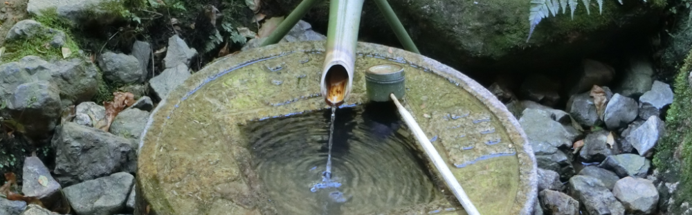

「石庭」
石庭に数々のトリックが潜む
「龍安寺」
Ryoanji Temple
世界中の人々が注目する寺院

「山門」
1450年に創建された龍安寺ですが、一度焼失してしまった歴史があります。しかし、その後1499年に再建され、その時に今では龍安寺で最も有名な石庭が造られたと伝えられています。
かつて天下を統一した豊臣秀吉も、この地を幾度となく訪れ、守っていたと言われており、秀吉の制札が今も残されています。
そんな龍安寺の石庭が、世界的に知られるようになったきっかけをご存知でしょうか。イギリスのエリザベス2世が1975年に日本へ訪問した際、龍安寺の拝観を希望し、石庭を絶賛したことが海外のマスコミでも報道されたことをきっかけに龍安寺は世界的に有名になり、1994年には世界文化遺産に指定されました。
「鏡容池」
池を中心に
彩られた境内
龍安寺の山門をくぐると、平安時代に貴族が舟を浮かべて歌舞音曲を楽しんでいたと言われる「鏡容池（きょうようち）」という大きな池を中心に池泉回遊式庭園が広がっています。
春は池の周りに咲き乱れる桜、夏は水面に花開く色とりどりの睡蓮、秋は鮮やかに色づいた紅葉、冬は雪景色といった四季折々に自然が織りなす美しい風景が鏡容池に映し出されます。
この様子から鏡容池という名前がつけられたとも言われていますが、昔は、オシドリの名所であったことから別名「オシドリ池」とも呼ばれています。
また、鏡容池の中央にある「弁天島」では、寺院の境内に神社の鳥居が建っているという珍しい光景を見ることができます。
美しい花木が水面に映る風景の眺めを楽しみながら、鏡容池の周りをゆっくりとお散歩してみてください。
「石庭」
神秘的な空間を持つ石庭
一面に白砂が敷き詰められ、大小合わせて15個の石が配置された龍安寺の石庭は、数々の謎が秘められていることで有名です。
1番の謎は、庭の作者が未だに不明であることです。作庭は、室町時代と推定され、庭石の裏には作者と思われる刻印もありますが、作者を断定するまでには至っていません。
そして、15個の石の配置の意図も不明のままであり、様々な説はありますが、見る人の自由な解釈で眺めてみてください。
他には、石庭の塀に演出された高低差です。塀の高さに傾斜をつけて遠近法を用いることで、見る人が視覚的に奥行きを感じる造りとなっています。
また、土塀の強固さです。高さ2m近くの土塀は、油土塀と言い、菜種油を混ぜて練り合わせた土で作られており、強度を増し、白砂からの照り返し防止にもなります。
自分と向き合える場所
「つくばい」
龍安寺の境内で目に留めて頂きたいのが、昔、日本で使用されていた銭の形の「つくばい（手水鉢）」です。水穴を「口」という漢字に見立て、周りの4文字と共用し、時計回りに「吾唯足るを知る」と読み、満足することを知っているものは幸せであるという教えを説いています。
季節によって風景を変える鏡容池や見る人によって見方が変わる石庭といった多様性を持つ世界観の龍安寺で、自分自身を見直すきっかけとなるのではないでしょうか。
龍安寺
営業時間：8:00〜16:30（時期によって異なりますので詳しくはHPでご確認ください。）
公式HP：http://www.ryoanji.jp/smph/eng
〒616-8001
京都市右京区龍安寺御陵下町13
最寄り駅：京福電鉄「龍安寺」下車 徒歩7分
最寄りのバス停：市バス「立命館大学前」下車 徒歩7分、「龍安寺前」下車すぐ
入場料：大人500円 中高生400円 小学生200円